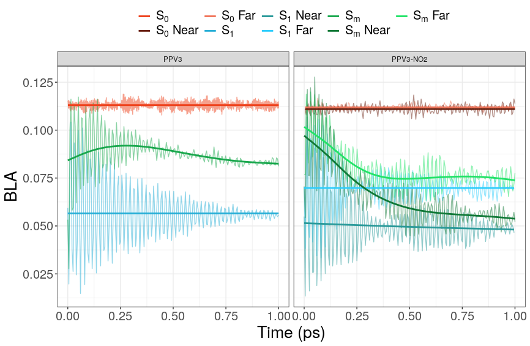

<?xml version="1.0" encoding="utf-8"?>
<!DOCTYPE html PUBLIC "-//W3C//DTD XHTML 1.0 Strict//EN"
"http://www.w3.org/TR/xhtml1/DTD/xhtml1-strict.dtd">
<html xmlns="http://www.w3.org/1999/xhtml" lang="en" xml:lang="en">
<head>
<!-- 2020-09-18 Fri 09:00 -->
<meta http-equiv="Content-Type" content="text/html;charset=utf-8" />
<meta name="viewport" content="width=device-width, initial-scale=1" />
<title>Paper 2</title>
<meta name="generator" content="Org mode" />
<meta name="author" content="Dustin Tracy" />
<style type="text/css">
 <!--/*--><![CDATA[/*><!--*/
  .title  { text-align: center;
             margin-bottom: .2em; }
  .subtitle { text-align: center;
              font-size: medium;
              font-weight: bold;
              margin-top:0; }
  .todo   { font-family: monospace; color: red; }
  .done   { font-family: monospace; color: green; }
  .priority { font-family: monospace; color: orange; }
  .tag    { background-color: #eee; font-family: monospace;
            padding: 2px; font-size: 80%; font-weight: normal; }
  .timestamp { color: #bebebe; }
  .timestamp-kwd { color: #5f9ea0; }
  .org-right  { margin-left: auto; margin-right: 0px;  text-align: right; }
  .org-left   { margin-left: 0px;  margin-right: auto; text-align: left; }
  .org-center { margin-left: auto; margin-right: auto; text-align: center; }
  .underline { text-decoration: underline; }
  #postamble p, #preamble p { font-size: 90%; margin: .2em; }
  p.verse { margin-left: 3%; }
  pre {
    border: 1px solid #ccc;
    box-shadow: 3px 3px 3px #eee;
    padding: 8pt;
    font-family: monospace;
    overflow: auto;
    margin: 1.2em;
  }
  pre.src {
    position: relative;
    overflow: auto;
    padding-top: 1.2em;
  }
  pre.src:before {
    display: none;
    position: absolute;
    background-color: white;
    top: -10px;
    right: 10px;
    padding: 3px;
    border: 1px solid black;
  }
  pre.src:hover:before { display: inline;}
  /* Languages per Org manual */
  pre.src-asymptote:before { content: 'Asymptote'; }
  pre.src-awk:before { content: 'Awk'; }
  pre.src-C:before { content: 'C'; }
  /* pre.src-C++ doesn't work in CSS */
  pre.src-clojure:before { content: 'Clojure'; }
  pre.src-css:before { content: 'CSS'; }
  pre.src-D:before { content: 'D'; }
  pre.src-ditaa:before { content: 'ditaa'; }
  pre.src-dot:before { content: 'Graphviz'; }
  pre.src-calc:before { content: 'Emacs Calc'; }
  pre.src-emacs-lisp:before { content: 'Emacs Lisp'; }
  pre.src-fortran:before { content: 'Fortran'; }
  pre.src-gnuplot:before { content: 'gnuplot'; }
  pre.src-haskell:before { content: 'Haskell'; }
  pre.src-hledger:before { content: 'hledger'; }
  pre.src-java:before { content: 'Java'; }
  pre.src-js:before { content: 'Javascript'; }
  pre.src-latex:before { content: 'LaTeX'; }
  pre.src-ledger:before { content: 'Ledger'; }
  pre.src-lisp:before { content: 'Lisp'; }
  pre.src-lilypond:before { content: 'Lilypond'; }
  pre.src-lua:before { content: 'Lua'; }
  pre.src-matlab:before { content: 'MATLAB'; }
  pre.src-mscgen:before { content: 'Mscgen'; }
  pre.src-ocaml:before { content: 'Objective Caml'; }
  pre.src-octave:before { content: 'Octave'; }
  pre.src-org:before { content: 'Org mode'; }
  pre.src-oz:before { content: 'OZ'; }
  pre.src-plantuml:before { content: 'Plantuml'; }
  pre.src-processing:before { content: 'Processing.js'; }
  pre.src-python:before { content: 'Python'; }
  pre.src-R:before { content: 'R'; }
  pre.src-ruby:before { content: 'Ruby'; }
  pre.src-sass:before { content: 'Sass'; }
  pre.src-scheme:before { content: 'Scheme'; }
  pre.src-screen:before { content: 'Gnu Screen'; }
  pre.src-sed:before { content: 'Sed'; }
  pre.src-sh:before { content: 'shell'; }
  pre.src-sql:before { content: 'SQL'; }
  pre.src-sqlite:before { content: 'SQLite'; }
  /* additional languages in org.el's org-babel-load-languages alist */
  pre.src-forth:before { content: 'Forth'; }
  pre.src-io:before { content: 'IO'; }
  pre.src-J:before { content: 'J'; }
  pre.src-makefile:before { content: 'Makefile'; }
  pre.src-maxima:before { content: 'Maxima'; }
  pre.src-perl:before { content: 'Perl'; }
  pre.src-picolisp:before { content: 'Pico Lisp'; }
  pre.src-scala:before { content: 'Scala'; }
  pre.src-shell:before { content: 'Shell Script'; }
  pre.src-ebnf2ps:before { content: 'ebfn2ps'; }
  /* additional language identifiers per "defun org-babel-execute"
       in ob-*.el */
  pre.src-cpp:before  { content: 'C++'; }
  pre.src-abc:before  { content: 'ABC'; }
  pre.src-coq:before  { content: 'Coq'; }
  pre.src-groovy:before  { content: 'Groovy'; }
  /* additional language identifiers from org-babel-shell-names in
     ob-shell.el: ob-shell is the only babel language using a lambda to put
     the execution function name together. */
  pre.src-bash:before  { content: 'bash'; }
  pre.src-csh:before  { content: 'csh'; }
  pre.src-ash:before  { content: 'ash'; }
  pre.src-dash:before  { content: 'dash'; }
  pre.src-ksh:before  { content: 'ksh'; }
  pre.src-mksh:before  { content: 'mksh'; }
  pre.src-posh:before  { content: 'posh'; }
  /* Additional Emacs modes also supported by the LaTeX listings package */
  pre.src-ada:before { content: 'Ada'; }
  pre.src-asm:before { content: 'Assembler'; }
  pre.src-caml:before { content: 'Caml'; }
  pre.src-delphi:before { content: 'Delphi'; }
  pre.src-html:before { content: 'HTML'; }
  pre.src-idl:before { content: 'IDL'; }
  pre.src-mercury:before { content: 'Mercury'; }
  pre.src-metapost:before { content: 'MetaPost'; }
  pre.src-modula-2:before { content: 'Modula-2'; }
  pre.src-pascal:before { content: 'Pascal'; }
  pre.src-ps:before { content: 'PostScript'; }
  pre.src-prolog:before { content: 'Prolog'; }
  pre.src-simula:before { content: 'Simula'; }
  pre.src-tcl:before { content: 'tcl'; }
  pre.src-tex:before { content: 'TeX'; }
  pre.src-plain-tex:before { content: 'Plain TeX'; }
  pre.src-verilog:before { content: 'Verilog'; }
  pre.src-vhdl:before { content: 'VHDL'; }
  pre.src-xml:before { content: 'XML'; }
  pre.src-nxml:before { content: 'XML'; }
  /* add a generic configuration mode; LaTeX export needs an additional
     (add-to-list 'org-latex-listings-langs '(conf " ")) in .emacs */
  pre.src-conf:before { content: 'Configuration File'; }

  table { border-collapse:collapse; }
  caption.t-above { caption-side: top; }
  caption.t-bottom { caption-side: bottom; }
  td, th { vertical-align:top;  }
  th.org-right  { text-align: center;  }
  th.org-left   { text-align: center;   }
  th.org-center { text-align: center; }
  td.org-right  { text-align: right;  }
  td.org-left   { text-align: left;   }
  td.org-center { text-align: center; }
  dt { font-weight: bold; }
  .footpara { display: inline; }
  .footdef  { margin-bottom: 1em; }
  .figure { padding: 1em; }
  .figure p { text-align: center; }
  .equation-container {
    display: table;
    text-align: center;
    width: 100%;
  }
  .equation {
    vertical-align: middle;
  }
  .equation-label {
    display: table-cell;
    text-align: right;
    vertical-align: middle;
  }
  .inlinetask {
    padding: 10px;
    border: 2px solid gray;
    margin: 10px;
    background: #ffffcc;
  }
  #org-div-home-and-up
   { text-align: right; font-size: 70%; white-space: nowrap; }
  textarea { overflow-x: auto; }
  .linenr { font-size: smaller }
  .code-highlighted { background-color: #ffff00; }
  .org-info-js_info-navigation { border-style: none; }
  #org-info-js_console-label
    { font-size: 10px; font-weight: bold; white-space: nowrap; }
  .org-info-js_search-highlight
    { background-color: #ffff00; color: #000000; font-weight: bold; }
  .org-svg { width: 90%; }
  /*]]>*/-->
</style>
<link rel="stylesheet" type="text/css" href="https://fniessen.github.io/org-html-themes/styles/readtheorg/css/htmlize.css"/>
<link rel="stylesheet" type="text/css" href="https://fniessen.github.io/org-html-themes/styles/readtheorg/css/readtheorg.css"/>
<script src="https://ajax.googleapis.com/ajax/libs/jquery/2.1.3/jquery.min.js"></script>
<script src="https://maxcdn.bootstrapcdn.com/bootstrap/3.3.4/js/bootstrap.min.js"></script>
<script type="text/javascript" src="https://fniessen.github.io/org-html-themes/styles/lib/js/jquery.stickytableheaders.min.js"></script>
<script type="text/javascript" src="https://fniessen.github.io/org-html-themes/styles/readtheorg/js/readtheorg.js"></script>
<script type="text/javascript" src="http://livejs.com/live.js"></script>
<script type="text/javascript">
/*
@licstart  The following is the entire license notice for the
JavaScript code in this tag.

Copyright (C) 2012-2020 Free Software Foundation, Inc.

The JavaScript code in this tag is free software: you can
redistribute it and/or modify it under the terms of the GNU
General Public License (GNU GPL) as published by the Free Software
Foundation, either version 3 of the License, or (at your option)
any later version.  The code is distributed WITHOUT ANY WARRANTY;
without even the implied warranty of MERCHANTABILITY or FITNESS
FOR A PARTICULAR PURPOSE.  See the GNU GPL for more details.

As additional permission under GNU GPL version 3 section 7, you
may distribute non-source (e.g., minimized or compacted) forms of
that code without the copy of the GNU GPL normally required by
section 4, provided you include this license notice and a URL
through which recipients can access the Corresponding Source.


@licend  The above is the entire license notice
for the JavaScript code in this tag.
*/
<!--/*--><![CDATA[/*><!--*/
 function CodeHighlightOn(elem, id)
 {
   var target = document.getElementById(id);
   if(null != target) {
     elem.cacheClassElem = elem.className;
     elem.cacheClassTarget = target.className;
     target.className = "code-highlighted";
     elem.className   = "code-highlighted";
   }
 }
 function CodeHighlightOff(elem, id)
 {
   var target = document.getElementById(id);
   if(elem.cacheClassElem)
     elem.className = elem.cacheClassElem;
   if(elem.cacheClassTarget)
     target.className = elem.cacheClassTarget;
 }
/*]]>*///-->
</script>
<script type="text/x-mathjax-config">
    MathJax.Hub.Config({
        displayAlign: "center",
        displayIndent: "0em",

        "HTML-CSS": { scale: 100,
                        linebreaks: { automatic: "false" },
                        webFont: "TeX"
                       },
        SVG: {scale: 100,
              linebreaks: { automatic: "false" },
              font: "TeX"},
        NativeMML: {scale: 100},
        TeX: { equationNumbers: {autoNumber: "AMS"},
               MultLineWidth: "85%",
               TagSide: "right",
               TagIndent: ".8em"
             }
});
</script>
<script type="text/javascript"
        src="https://cdnjs.cloudflare.com/ajax/libs/mathjax/2.7.0/MathJax.js?config=TeX-AMS_HTML"></script>
</head>
<body>
<div id="content">
<h1 class="title">Paper 2</h1>
<div id="table-of-contents">
<h2>Table of Contents</h2>
<div id="text-table-of-contents">
<ul>
<li><a href="#org933e823">Introduction</a></li>
<li><a href="#org16a9c6e">Theoretical Methodology</a>
<ul>
<li><a href="#org3ec4c27">Adiabatic Motion</a></li>
<li><a href="#org3c802d9">Non-Adiabatic</a></li>
</ul>
</li>
<li><a href="#org625c617">Computational Design</a></li>
<li><a href="#orgfb5ea30">Computational Timings</a></li>
<li><a href="#org5ee1020">Simulation Methods</a>
<ul>
<li><a href="#org8645edd">Ground State Sampling</a></li>
<li><a href="#org7fd8921">Pulse Pump Calculations</a>
<ul>
<li><a href="#org26d855c">Explain the pulse pump experiment</a></li>
<li><a href="#org7390423">Excited State Density Chart</a></li>
</ul>
</li>
<li><a href="#orga4292c9">S<sub>m</sub> Non Adiabatic Dynamics</a></li>
</ul>
</li>
<li><a href="#org7e5c03e">Simulation Results</a>
<ul>
<li><a href="#org882396b">How many Data points were available.</a></li>
<li><a href="#org303bc67">State Populations</a></li>
<li><a href="#orgaa872f8">Potential Energies</a></li>
<li><a href="#org8025ade">Bond Length Adjustment</a></li>
<li><a href="#org0fe7897">Dihedral Angles</a>
<ul>
<li><a href="#org590c167">Why do we want to do dihedral angels?</a></li>
<li><a href="#orgc670c0a">Description of the plot</a></li>
<li><a href="#org0283019">Inital Dihedral angle for S<sub>m</sub> is lower than ground state</a></li>
<li><a href="#org0408d73">Dihedral relaxation of S<sub>1</sub> may be slightly faster in ppv3-no2</a></li>
<li><a href="#orgc666f87">Dihedral relaxation of S<sub>m</sub> significantly faster in ppv3-no2</a></li>
<li><a href="#orgb342ea2">Dihedral relaxation without accounting for trivial crossings is slower</a></li>
<li><a href="#org83f02f7">Separation of the of the near and far S<sub>m</sub>, before S<sub>1</sub></a></li>
<li><a href="#org09c0c64">Dihedral splits with ppv3-no2</a></li>
</ul>
</li>
<li><a href="#orgee2572b">Wiberg Bond Analysis</a></li>
</ul>
</li>
<li><a href="#org6d7b082">Papers To Read</a></li>
</ul>
</div>
</div>
<div id="outline-container-org933e823" class="outline-2">
<h2 id="org933e823">Introduction</h2>
<div class="outline-text-2" id="text-org933e823">
<p>
When strong couplings between the vibrational electronic states of freedom
exist, the Born-Oppenheimer approximation breaks. This assumption that nuclear
coordinate motion is negligible to electronic motion fails to be accurate and
molecular dynamics must consider non-adiabatic behaviors in order to
produce reasonably accurate simulations.
</p>

<p>
This type of research we have a ground thing above the ground state dim sleep
populated manifold of excited States state board often swapping energy in other
words the energy of one state at will be higher than another state at one point
then at a later time the energy of that first date could be visited the energy
of the other ones so we must all think you track of the order of the states. As
a general rule we also need to be solving the structure ecrater the creation on
the Fly for each electronic level . Calculating the potential energy surfaces
for all these dates is quite complex and requires solutions to the shrinker
equation the backend methods used to calculate these put the Chinese Services
can range to externally complicated density functional Theory methods to others
much more simplified to me empirical methods effort must be made to balance
accuracy to efficiency in this regards.
</p>

<p>
PPV<sub>3</sub>-NO<sub>2</sub>'s high energy barrier between its ground state and
first excited-state matches up with Kasha’s rule.
</p>

<p>
The characteristics of this electronic manifold overtime to be very useful to a
multiple of different you scenarios such as the residence in which we care
deeply about the molecules lowest level excited state or in light harvesting
Light-harvesting applications and where the molecule excitation energy is being
transferred to charge separation. The study of photosynthesis can also be how to
buy this type of research that focuses on the non-radiative crossings The ground
state.
</p>

<p>
Ton of research has gone in the study and he's not on a team that is molecular
Dynamics methodologies methodologies range from the extremely complicated
inexpensive approaches such as I can figure is time-dependent Arkansas cabin air
show for methods and Quantum movies The are quite similar ones such as ehrenfest
Theory but the ones that this paper focuses on is specifically the toy surface
hopping methodology used with a package, the not adiabatic said America the
Dynamics package developed at Los Alamos.
</p>

<p>
Anon idiopathic excited state Dynamics program has until recently been used only
in implicit solvents or an explicit song fence without any type of Nadia body
Dynamics only in the excited first excited States. in this paper we propose a
method to extend the capabilities of the non adiabatic cold using the Amber
package and its ability to do q m m m Dynamics and boxes.
</p>

<p>
Are focuses on organic conjugated molecule specifically ppv 3 and PPP 2 as shown
in the diagram.
</p>
</div>
</div>
<div id="outline-container-org16a9c6e" class="outline-2">
<h2 id="org16a9c6e">Theoretical Methodology</h2>
<div class="outline-text-2" id="text-org16a9c6e">
</div>
<div id="outline-container-org3ec4c27" class="outline-3">
<h3 id="org3ec4c27">Adiabatic Motion</h3>
<div class="outline-text-3" id="text-org3ec4c27">
<p>
To find the excited state energies during dynamics, we calculate the Liouville
eigenvalue equation
</p>

\begin{align*}
  \hat{\mathbf{\mathcal{L}}}\mathbf{\rho}_{0\alpha} = \Omega\mathbf{\rho}_{0\alpha}
\end{align*}

<p>
with \(\mathbf{\mathcal{L}}\) being the two-particle Louiville operator and
\(\Omega\) the energy difference between the \(\alpha\) state and the ground
state, where the Liouville operator can be found analytically by
</p>

\begin{align*}
  \hat{\mathbf{\mathcal{L}}}\mathbf{\rho}_{0\alpha} = \left[ \mathbf{F}^{\vec{R}}(\mathbf{\rho}_{00}), \mathbf{\rho}_{0\alpha} \right]
  + \left[ \mathbf{V}^{\vec{R}}(\mathbf{\rho}_{0\alpha}), \mathbf{\rho}_{00} \right]
\end{align*}

<p>
and the single electron density matrix for each state of the system is described by
</p>

\begin{align*}
  (\mathbf{\rho}_{0\alpha})_{nm} =  \left< \psi_{alpha} \right| c_m^\dagger c_n \left| \psi_0 \right>.
\end{align*}

<p>
The forces are then calculated analytically by the gradient of the ground state
energy and the excited state energy.
</p>

\begin{align*}
  \vec{\nabla} E_{\alpha} = \vec{\nabla} E_0 + \vec{\nabla} \Omega_{\alpha}
\end{align*}

<p>
With the gradient of the ground state being calculated by
</p>

\begin{align*}
  \vec{\nabla} E_0 = \frac{1}{2}\mathbf{Tr} \left[ \left( \mathbf{t}^{\vec{R}} + \mathbf{F}^{\vec{R}} \right) \mathbf{\rho}_{00} \right]
\end{align*}

<p>
and the gradient of the excited state being
</p>

\begin{align*}
  \vec{\nabla}\Omega_{\alpha} = \mathbf{Tr} \left[ \mathbf{F}^{\vec{R}} (\mathbf{\rho}_{\alpha\alpha} - \mathbf{\rho}_{00})\right]
  + \mathbf{Tr} \left[\mathbf{V}^{\vec{R}}\mathbf{\rho}_{0\alpha}^\dagger \mathbf{\rho}_{0\alpha} \right]
\end{align*}

<p>
where \(\mathbf{\rho}_{ij}\) represents the density or transition density matrix for states i and
j, \( \mathbf{F} \) is the Fock matrix,  \( \mathbf{t} \) is the kinetic operator acting on
one-electron and \( \mathbf{V} \) is the column interchange operator.
</p>
</div>
</div>
<div id="outline-container-org3c802d9" class="outline-3">
<h3 id="org3c802d9">Non-Adiabatic</h3>
<div class="outline-text-3" id="text-org3c802d9">
<p>
As each trajectory moves along its potential energy surface, Tully's
Fewest Switches Surface Hopping algorithm (FSSH) determines when a state
transitions occurs.<a class='org-ref-reference' href="#tully2012perspective">tully2012perspective</a>,<a class='org-ref-reference' href="#tully1990molecular">tully1990molecular</a>  
</p>

<p>
We define the Hamiltonian be defined as
</p>
\begin{equation} \label{eq:tullyHamiltonian} \mathbf{H} = \mathbf{T}_{R} +
  \mathbf{H}_{0}(\mathbf{r},\mathbf{R})
\end{equation}
<p>
where the matrix elements of the electron Hamiltonian are
</p>

\begin{equation} \label{eq:tullyVelements}
  V_{ij}(\mathbf(R))=\left<\phi_i(\mathbf{r};\mathbf{R})\right|\mathbf{H}_{0}\left.(\mathbf{r};\mathbf{R})\phi_j(\mathbf{r};\mathbf{R})\right>
\end{equation}

<p>
At each step we perform a montecarlo like decision
</p>

\begin{equation} \label{eq:tullyjump2} 
\sum_{j=1}^{k-1}g_{ij} < \zeta  \le \sum_{j=1}^{k}g_{ij}
\end{equation}
<p>
hopping from state i to k when
</p>
\begin{equation} \label{eq:tullyjump1} 
  \zeta < g_{ik}
\end{equation}
<p>
where &zeta; is a uniformly distributed random number from 0 to 1, and
</p>

\begin{equation}
g_{ik} = \frac{b_{ki}(t=0)\Delta t}{a_{ii}(t=0)}
\end{equation}

<p>
with
</p>

\begin{equation} \label{eq:tullyb2a} 
b_{kj} =
        \frac{2}{\hbar}\Im\left(a_{kj}^*V_{kj}\right) - 2\Re\left(a_{kj}^*
         \dot{\mathbf{R}} \cdot \mathbf{d}_{kj}\right).
\end{equation}
<p>
\(a_{kj}\) are the off diagonals of the density matrix \(a_{kj} = c_k^* c_j\) and
\(\mathbf{d}_{kj}\) is the non-adiabatic coupling vector
</p>

\begin{equation} \label{eq:tullynacoupling} 
\mathbf{d}_{kj}\mathbf(R) =
  \left<\phi_{k}(\mathbf{r};\mathbf{R})\right|\mathbf{\nabla}_{\mathbf{R}}\left.\phi_j(\mathbf{r};\mathbf{R})\right>.
\end{equation}
<p>
We use the Collect Oscillator Approach to calculate the non-adiabatic coupling
terms \(\mathbf{R} \cdot \mathbf{d}_{kj}\) ``on the
fly''. <a class='org-ref-reference' href="#tommasini2001electronic">tommasini2001electronic</a>,<a class='org-ref-reference' href="#tretiak1996collective">tretiak1996collective</a>,<a class='org-ref-reference' href="#tretiak2009representation">tretiak2009representation</a>,<a class='org-ref-reference' href="#chernyak2000density">chernyak2000density</a>
</p>
</div>
</div>
</div>

<div id="outline-container-org625c617" class="outline-2">
<h2 id="org625c617">Computational Design</h2>
<div class="outline-text-2" id="text-org625c617">

<div class="figure">
<p> 
</p>
<p><span class="figure-number">Figure 1: </span>Swim-lane diagram describing the common timestep of the SANDER-NEXMD interface. <div id="scheme:nasqm"></div></p>
</div>

<p>
The swim-lane chart in figure <a href="#scheme:nasqm">scheme:nasqm</a> describes a common time-step that occurs within the SANDER-NEXMD interface.
First users initiate the program through SANDER, a program found in AMBERTOOLS. 
SANDER uses NEXMD to calculate the energies and forces of the QM atoms, check for trivial crossings, and propagate the quantum coefficients.
With these results, SANDER performs the QM/MM procedures to derive the accelerations and velocities for the classical time step. 
NEXMD then decides whether to perform a state transitions, adjusting the velocities as needed. 
Finally SANDER propagates the nuclear coordinates and the cycle continues for the rest of the dynamics.
</p>

<p>
SANDER calls NEXMD providing the function calls with the QM coordinates, MM charges, and Langevin thermostat parameters. 
NEXMD calculates the energies of the QM atoms with electrostatic interactions from the MM point charges using CIS, TDHF, or TDDFT. 
A variety of Hamiltonians are available; however, AM1 has been shown to provide very reasonable computational cost to accuracy for our systems of interest.<a class='org-ref-reference' href="#silva2010benchmark">silva2010benchmark</a>
</p>

<p>
After calculating energies, NEXMD performs a check for non-avoided trivial crossings.
Computational feasibility of this step requires the calculations of the non-adiabatic .<a class='org-ref-reference' href="#nelson2020non">nelson2020non</a> We use an analytical form of the non-adiabatic coupling derived using the Hellman-Feynman theorem. <a class='org-ref-reference' href="#tommasini2001electronic">tommasini2001electronic</a>,<a class='org-ref-reference' href="#chernyak2000density">chernyak2000density</a> 
</p>

<p>
\[
 \mathbf{d}_{ab}(\mathbf{R})
= \frac{ \left< \Psi_a (\mathbf{r}, \mathbf{R}) \right| \nabla_\mathbf{R}
\hat{H}_{el} (\mathbf{r}, \mathbf{r}) \left| \Psi_b (\mathbf{r}, \mathbf{R})
\right> } { E_b(\mathbf{R}) - E_a(\mathbf{R}) } 
\] 
</p>

<p>
NEXMD then compares the overlap of the density functions of the current step to those in the previous state. 
If a non-avoided trivial crossings is suspected, addition energy calculations are performed along the interpolation of the classical step, and overlap matrices are compared.
Trivial crossing will result in a change in state number but will continue to propagate along the most recent potential energy surface. 
</p>

<p>
NEXMD then propagates the quantum coefficients.
Generally, this propagation requires a smaller time-step than whats needed for nuclear coordinate propagation, as such, three or four quantum steps are performed for every classical step. 
These intermediary quantum calculations are performed using nuclear coordinates determined through an interpolation of the classical time step.
Inclusion of the thermostat parameters allow for fined tuned precision in these interpolations.
</p>

<p>
Forces are then determined using the analytical solution to the gradient of the energies.
For the ground state,
</p>
\begin{align*}
  \vec{\nabla} E_0 = \frac{1}{2}\mathbf{Tr} \left[ \left( \mathbf{t}^{\vec{R}} + \mathbf{F}^{\vec{R}} \right) \mathbf{\rho}_{00} \right]
\end{align*},
and for the excitation energy
\begin{align*}
  \vec{\nabla}\Omega = \mathbf{Tr} \left[ \mathbf{F}^{\vec{R}} (\mathbf{\rho}_{\alpha\alpha} - \mathbf{\rho}_{00})\right]
  + \mathbf{Tr} \left[\mathbf{V}^{\vec{R}}\mathbf{\rho}_{0\alpha}^\dagger \mathbf{\rho}_{0\alpha} \right]
\end{align*}
<p>
where \(\mathbf{\rho}_{ij}\) represents the density or transition density matrix for states i and
j, \( \mathbf{F} \) is the Fock matrix,  \( \mathbf{t} \) is the kinetic operator acting on
one-electron and \( \mathbf{V} \) is the column interchange operator.
</p>

<p>
The energies, forces, and electron densities are returned to SANDER where SANDER's built in QM/MM routines performs the QM/MM calculations using the excited state electron density. 
The resulting total forces are then used to update the velocities for both MM and QM atoms for a single timestep and are passed back into NEXMD. 
</p>

<p>
The aformentioned probability of hopping mentioned in theoretical methods can be expanded to 
\[ 
g_{\alpha \rightarrow \beta} = 
-\frac{\Delta t}{\hbar}
\frac{2\Re\left( c_\alpha(t)c_\beta^*(t) \dot{\vec{R}} \cdot \vec{d}_{\alpha\beta} \right)}
{| c_\alpha(t) |^2} 
\] 
which NEXMD now uses to determine whether a hop between the adiabatic states should occur.
If a hop occurs, the nuclear velocities are adjusted along the non-adiabatic coupling vector to conserve energy. 
If a state transition occurs, the velocities of the nuclear atoms are adjusted along the non-adiabatic coupling vectors to conserve energy.
With the new state chosen, AMBER now uses the average velocities to propagate the nuclear coordinates.
New random numbers are generated for the thermostats when appropriate.
</p>
</div>
</div>

<div id="outline-container-orgfb5ea30" class="outline-2">
<h2 id="orgfb5ea30">Computational Timings</h2>
</div>
<div id="outline-container-org5ee1020" class="outline-2">
<h2 id="org5ee1020">Simulation Methods</h2>
<div class="outline-text-2" id="text-org5ee1020">

<div class="figure">
<p>
</p>
</div>
</div>
<div id="outline-container-org8645edd" class="outline-3">
<h3 id="org8645edd">Ground State Sampling</h3>
<div class="outline-text-3" id="text-org8645edd">
<p>
We equilibrated the system to a temperature set to 300K. To collect a broad
enough sampling, we sampled from a 1024 ps, with a 0.5 fs timestep fully
classical trajectories using the AMBER force field. We performed a separate
trajectory for each situation combination of solute / with solvent including
whether the solvent was included in the QM calculations. We had a total of 6
separate 1024 ps classical trajectories, PPV3 in Vacuum, CH<sub>3OH</sub>, and 5QM CH<sub>3OH</sub>
and PPV<sub>3</sub>-NO<sub>2</sub> in Vacuum, CH<sub>3OH</sub>, and 5QM CH<sub>3OH</sub>. 1024 snapshots where taken at
1ps, 2ps .. 1024ps. We used the final frame of those tranjectories as the
initial conditions for an additional 4ps using the AM1 semiempical Hamiltonian
Born-Oppenheimer on the molecules to be included in future QM calculations to
allow the system to relax. The 4 ps timescale was determined using the
information form the previous paper. The simulations were described the Langevin
equations at a temperature set to 300 K with the Langevin friction parameter set
to 2 ps<sup>-1</sup>. The final frames of these QM trajectories were then used as the
initial conditions for the following pulse pump calculations.
</p>
</div>
</div>
<div id="outline-container-org7fd8921" class="outline-3">
<h3 id="org7fd8921">Pulse Pump Calculations</h3>
<div class="outline-text-3" id="text-org7fd8921">
</div>
<div id="outline-container-org26d855c" class="outline-4">
<h4 id="org26d855c">Explain the pulse pump experiment</h4>
<div class="outline-text-4" id="text-org26d855c">
<p>
Pump-Probe Spectroscopy is and experimental technique commonly performed in the
study of ultrafast electonic statte dynamics. In the case of conjugated polymers
in can be used to study the localized excictronic tranisions that are
accessible through and excitation of the S1 state but not the ground state S0.
To simulate this behavior, we take the final snapshot of the QM ground state
calculations and perform a single point calculation at the S1 state to find the
next state with the highest oscillator strength.
</p>
</div>
</div>
<div id="outline-container-org7390423" class="outline-4">
<h4 id="org7390423">Excited State Density Chart</h4>
<div class="outline-text-4" id="text-org7390423">
<p>
We looked specifically for a large peak in oscillator strength, at least twice
the amount of any other. Those trajectories that failed to meet those conditions
were filtered out from the following calculations. We recorded the successful
state transitions and used them for the S<sub>m</sub> state tully excited state
calculations dynamics.
</p>
</div>
</div>
</div>
<div id="outline-container-orga4292c9" class="outline-3">
<h3 id="orga4292c9">S<sub>m</sub> Non Adiabatic Dynamics</h3>
<div class="outline-text-3" id="text-orga4292c9">
<p>
Using the same snapshot used for the Pulse Pump calculations and their
corresponding trajectories, we used the previously calculated state from the
pulse pump as our initial state and perform a 500 fs dyanmics with timestep of
0.5 fs, and nuclear coordinate dyanmics described by the Langevin dynamics with
temperature set to 300K and friction set to 20<sup>-1</sup>. The dyanmics were allowed
to behave non-adiabatically and we tested for trivial unavoided crossing between
excited states.The dynamics did not include QM ewald.
</p>
</div>
</div>
</div>
<div id="outline-container-org7e5c03e" class="outline-2">
<h2 id="org7e5c03e">Simulation Results</h2>
<div class="outline-text-2" id="text-org7e5c03e">
</div>
<div id="outline-container-org882396b" class="outline-3">
<h3 id="org882396b">How many Data points were available.</h3>
</div>
<div id="outline-container-org303bc67" class="outline-3">
<h3 id="org303bc67">State Populations</h3>
<div class="outline-text-3" id="text-org303bc67">

<div class="figure">
<p>
</p>
<p><span class="figure-number">Figure 3: </span>Populations for the excited states with extended lifespans for PPV<sub>3</sub> and PPV<sub>3</sub>-NO<sub>2</sub>. S<sub>m</sub> represents the initial state. <div id="fig:all-populations"></div></p>
</div>

<table border="2" cellspacing="0" cellpadding="6" rules="groups" frame="hsides">
<caption class="t-above"><span class="table-number">Table 1:</span> Fitting Parameters for the model of the rise of the S<sub>1</sub> population. <div id="table:s1"></div></caption>

<colgroup>
<col  class="org-left" />

<col  class="org-left" />

<col  class="org-right" />

<col  class="org-right" />
</colgroup>
<tbody>
<tr>
<td class="org-left">Solvent</td>
<td class="org-left">Solute</td>
<td class="org-right">\(\tau\) (fs)</td>
<td class="org-right">A</td>
</tr>

<tr>
<td class="org-left">Vacuum NT</td>
<td class="org-left">PPV<sub>3</sub></td>
<td class="org-right">258 !! Tammies (394) !!</td>
<td class="org-right">1.28</td>
</tr>

<tr>
<td class="org-left">Vacuum</td>
<td class="org-left">PPV<sub>3</sub></td>
<td class="org-right">671</td>
<td class="org-right">1.16</td>
</tr>

<tr>
<td class="org-left">CH<sub>3</sub>OH</td>
<td class="org-left">PPV<sub>3</sub></td>
<td class="org-right">693</td>
<td class="org-right">1.06</td>
</tr>

<tr>
<td class="org-left">CH<sub>3</sub>OH with 5QM</td>
<td class="org-left">PPV<sub>3</sub></td>
<td class="org-right">550</td>
<td class="org-right">1.10</td>
</tr>

<tr>
<td class="org-left">Vacuum</td>
<td class="org-left">PPV<sub>3</sub>-NO<sub>2</sub></td>
<td class="org-right">84.6</td>
<td class="org-right">1.64</td>
</tr>

<tr>
<td class="org-left">CH<sub>3</sub>OH</td>
<td class="org-left">PPV<sub>3</sub>-NO<sub>2</sub></td>
<td class="org-right">90.4</td>
<td class="org-right">1.62</td>
</tr>

<tr>
<td class="org-left">CH<sub>3</sub>OH with 5QM</td>
<td class="org-left">PPV<sub>3</sub>-NO<sub>2</sub></td>
<td class="org-right">93.8</td>
<td class="org-right">1.61</td>
</tr>
</tbody>
</table>

<p>
Figure <a href="#fig:all-populations">fig:all-populations</a> shows the population of each state calculated as
the number of trajectories at the state's potential energy surface over the
total number of trajectories. S<sub>m</sub> represents the initial state calculated using
the pulse pump calculations previously done. States S<sub>7</sub> and S<sub>9</sub> are included as
the only other "slow" states, or states that reached a population of more than
0.05. The other states were excluded from the graph. These charts show that the
addition of the NO<sub>2</sub> oligimors dramatically speed up the state relaxation. S<sub>m</sub>
ranged from S<sub>9</sub> to S<sub>15</sub> for PPV<sub>3</sub> and S<sub>11</sub> to S<sub>21</sub> for PPV<sub>3</sub>-NO<sub>2</sub>. Figure
<a href="#fig:s1-populations">fig:s1-populations</a>, shows the rise of the S<sub>1</sub> populations over the first
500 fs after excitation. We model these rises by fitting the curves to the
function
</p>
\begin{equation}
f(t) = \frac{Ae^{t/\tau}}{A+e^{t/\tau}} - \frac{A}{1+A}
\end{equation}
<p>
where \(t\) is time, \(\tau\) is the relaxation, and \(A\) is a constant that
normalizes such that the populations remain between 0 and 1. The results are displayed in <a href="#table:s1">table:s1</a>. 
We clearly see that adding a test for trivial-nonavoided crossing slows the rate
of relaxation from a time constant of 258~fs. This is to be expected since we
are now preventing transitions (mostly downward) that should not occur. The
methanol have mixed results with regards to PPV3 and seem to slightly slow the
relaxation of PPV3-NO<sub>2</sub>. Experiments using ultrafast spectroscopy have shown that
for PPV thin films the time constant for relaxations should be around 200 fs.
However, that was on thin films and for PPV<sub>3</sub>, the energy gap !! Average S<sub>1</sub> -&gt;
S<sub>m</sub> energy gap) than in the thin film (0.8eV). Previous research using the
NAESMD framework have shown a time constant of 394 fs, but this was without the
test for trivial non-avoided crossings.
</p>


<div class="figure">
<p>
</p>
<p><span class="figure-number">Figure 4: </span>Population of the first excited state (S<sub>1</sub>) of PPV<sub>3</sub> and PPV<sub>3</sub>-NO<sub>2</sub> in various solvents obtained from the fraction of trajectories in each state. <div id="fig:s1-populations"></div></p>
</div>
</div>
</div>

<div id="outline-container-orgaa872f8" class="outline-3">
<h3 id="orgaa872f8">Potential Energies</h3>
<div class="outline-text-3" id="text-orgaa872f8">
<p>
The potential energies averaged over !!N-PPV3!! and !!N-PPV3-NO2!! completed
trajectories are shown in figures <a href="#fig:ppv3-potential">fig:ppv3-potential</a> and
<a href="#fig:ppv3-no2-potential">fig:ppv3-no2-potential</a>. The corresponding S<sub>0</sub> and S<sub>1</sub> states are shown for
comparison and are the last 500 fs of a 10 ps run for each of those states. As
the initial S<sub>m</sub> trajectories reduce the potential energies reduce towards the
corresponding S<sub>1</sub> steady state energies. From figure
<a href="#fig:ppv3-no2-s1-populations">fig:ppv3-no2-s1-populations</a>, we can see that by 400 fs, most of the population
in the PPV<sub>3</sub>-NO<sub>2</sub> trajectories are on the S<sub>1</sub> potential energy surface.
After 400ps, any reduction in the potential energy is due to adiabatic
relaxation. We include for comparison in figure <a href="#fig:ppv3-potential">fig:ppv3-potential</a> the
potential energy relaxation form the initial S<sub>m</sub> trajectories without using a
test for trivial unavoided crossings tracking the spacialization of the
electronic transitions as implemented by the Tretiak group labeled (S<sub>m</sub> Vacuum
NT). By taking into account a test for trivial non-avoided crossings, we see a
notable reduction in the rate of relaxation. This matches what we see in the
growth of the S<sub>1</sub> populations as seen in <a href="#fig:ppv3-s1-populations">fig:ppv3-s1-populations</a>, where
without the tests for trivial crossings, the S<sub>1</sub> state rises much quicker. 
</p>

<p>
The energies between the solvent and vacuum. The potential energie of the solute
in vacuum is noticablly smaller than in vacuum as to be expected. The rate of
relaxation in methanol for PPV<sub>3</sub>-NO<sub>2</sub> is slightly faster than in vacuum, but
negligable in the case PPV<sub>3</sub>. Adding the 5 solvents to the calculation did not
seem to result in any noticable differences in regards to the potential energy
relaxation rate for either PPV<sub>3</sub> or PPV<sub>3</sub>-NO<sub>2</sub>. There's a larger difference
between the S<sub>1</sub> relaxed potential energies for PPV_{3{-NO<sub>2</sub> than there is at the
initial S<sub>m</sub> states. 
</p>


<div class="figure">
<p>
</p>
<p><span class="figure-number">Figure 5: </span>Average potential energy during dynamics at 300K for PPV<sub>3</sub> and PPV<sub>3</sub>-NO<sub>2</sub>. Vacuum NT is dynamics ran without trivial crossings. <div id="fig:ppv3-potential"></div></p>
</div>
</div>
</div>

<div id="outline-container-org8025ade" class="outline-3">
<h3 id="org8025ade">Bond Length Adjustment</h3>
<div class="outline-text-3" id="text-org8025ade">
<p>
In figure <a href="#fig:bla-vacuum">fig:bla-vacuum</a>, the BLA for both PPV<sub>3</sub> and PPV<sub>3</sub>-NO<sub>2</sub> in
vacuum the ground state varies very little the two. We use shades of red the
display the ground-state and shades of green to represent states that start in
S<sub>m</sub> and shades of blue the describe a first excited state trajectores. The
ground state has very little variation. The first excited state splits in PPV<sub>3</sub>-NO<sub>2</sub>,
with the Far Side being described as being the furthest from the Nitro goup.  
States SM and state S1 the atom group further from the Nitro group had a more
distinct variation than the bla with the groups nearest the Nitro group The
variation is most distinct and the first excited States the difference between
the them on the S<sub>m</sub> closed group is very much smaller and similar to what we found in
the The potential Energies The Barley the Judgment relaxation, and ppb 3 ml to
is significantly faster than that time of PPP. The ground-state energy that we
found matches values performed from the previous research by Tammie as does the
S5 started to take pla Big billy for the states for the trajectories that
started in the initial M States showed a slider longer time for relaxation than
that found and Tammy's research. FIXME I need to add Tammy's ballet data to the
Bone length adjustment. The very quick relaxation of the bla in the states
suggest that very quickly after the initial excitation, PPV<sub>3</sub>-NO<sub>2</sub> quickly
stabilizes and flattens within first 500 fs. Later we will compare this
to the dihedral angle to see if this matches our expectations. Previous research
has shown that after this acceptation an actual Bond indices at the Scribe by
the Wydber index shrinks well showing that the single bonds gain a significant
amount double bond characteristics causing the molecule to Stiffen.
</p>


<div class="figure">
<p>
</p>
<p><span class="figure-number">Figure 6: </span>Bond Length Adjustments for various states for PPV<sub>3</sub> and PPV<sub>3</sub>-NO<sub>2</sub> in vacuum. <div id="fig:bla-vacuum"></div></p>
</div>
</div>
</div>

<div id="outline-container-org0fe7897" class="outline-3">
<h3 id="org0fe7897">Dihedral Angles</h3>
<div class="outline-text-3" id="text-org0fe7897">

<div class="figure">
<p>
</p>
<p><span class="figure-number">Figure 7: </span>Dihedral angles for various states for PPV<sub>3</sub> and PPV<sub>3</sub>-NO<sub>2</sub> in vacuum. <div id="fig:dihedral-vacuum"></div></p>
</div>
</div>

<div id="outline-container-org590c167" class="outline-4">
<h4 id="org590c167">Why do we want to do dihedral angels?</h4>
<div class="outline-text-4" id="text-org590c167">
<p>
The torsion angle around the vinylene segments have been shown to be highly coupled to the excited state. <a class='org-ref-reference' href="#nelson2011nonadiabatic">nelson2011nonadiabatic</a>,<a class='org-ref-reference' href="#panda2013electronically">panda2013electronically</a>  
</p>
</div>
</div>
<div id="outline-container-orgc670c0a" class="outline-4">
<h4 id="orgc670c0a">Description of the plot</h4>
<div class="outline-text-4" id="text-orgc670c0a">
</div>
<ul class="org-ul">
<li><a id="org66aafeb"></a>Lines are drawn to help guide the eye<br /></li>
<li><a id="orga7d384d"></a>The S<sub>1</sub> and S<sub>0</sub> state plotted are from previous research<br /></li>
<li><a id="org6ffd4a6"></a>Red is ground, Blue is S<sub>1</sub>, Green is S<sub>m</sub><br /></li>
<li><a id="orgf1dab12"></a>S<sub>m</sub> refers to trajectories that started after the pulse pump<br /></li>
</ul>
</div>
<div id="outline-container-org0283019" class="outline-4">
<h4 id="org0283019">Inital Dihedral angle for S<sub>m</sub> is lower than ground state</h4>
<div class="outline-text-4" id="text-org0283019">
</div>
<ul class="org-ul">
<li><a id="org2790087"></a>Visual analysis as to why<br /></li>
<li><a id="orgae6fe94"></a>Previous paper have found that initial torsional angles strongly determine vertical excitations <a class='org-ref-reference' href="#barford2011ultrafast">barford2011ultrafast</a><br /></li>
</ul>
</div>
<div id="outline-container-org0408d73" class="outline-4">
<h4 id="org0408d73">Dihedral relaxation of S<sub>1</sub> may be slightly faster in ppv3-no2</h4>
<div class="outline-text-4" id="text-org0408d73">
</div>
<ul class="org-ul">
<li><a id="org4fd9cc6"></a>0.5 ps vs 0.55 ps<br /></li>
</ul>
</div>
<div id="outline-container-orgc666f87" class="outline-4">
<h4 id="orgc666f87">Dihedral relaxation of S<sub>m</sub> significantly faster in ppv3-no2</h4>
<div class="outline-text-4" id="text-orgc666f87">
</div>
<ul class="org-ul">
<li><a id="orgf3b3b12"></a>Suggests the increased relaxation is due to quick relaxation of the state population<br /></li>
</ul>
</div>
<div id="outline-container-orgb342ea2" class="outline-4">
<h4 id="orgb342ea2">Dihedral relaxation without accounting for trivial crossings is slower</h4>
<div class="outline-text-4" id="text-orgb342ea2">
</div>
<ul class="org-ul">
<li><a id="org9b59395"></a>Also suggest relaxation is due to quick drop in excited state.<br /></li>
</ul>
</div>
<div id="outline-container-org83f02f7" class="outline-4">
<h4 id="org83f02f7">Separation of the of the near and far S<sub>m</sub>, before S<sub>1</sub></h4>
<div class="outline-text-4" id="text-org83f02f7">
</div>
<ul class="org-ul">
<li><a id="org24204eb"></a>Earlier than what occured in the bla caclulation<br /></li>
</ul>
</div>
<div id="outline-container-org09c0c64" class="outline-4">
<h4 id="org09c0c64">Dihedral splits with ppv3-no2</h4>
<div class="outline-text-4" id="text-org09c0c64">
</div>
<ul class="org-ul">
<li><a id="orgfea796f"></a>Could this be because of the nitro group. Short 32 trajectory of PPV3-NO2 w/o methanol groups.<br />
<div class="outline-text-5" id="text-orgfea796f">

<div class="figure">
<p>
</p>
<p><span class="figure-number">Figure 8: </span>Dihedral angles for PPV<sub>3</sub> and PPV<sub>3</sub>-NO<sub>2</sub> in various solutes initialized to S<sub>m</sub>. <div id="fig:dihedral-solvents"></div></p>
</div>
</div>
</li>
</ul>
</div>
</div>

<div id="outline-container-orgee2572b" class="outline-3">
<h3 id="orgee2572b">Wiberg Bond Analysis</h3>
<div class="outline-text-3" id="text-orgee2572b">
<p>

<h1 class='org-ref-bib-h1'>Bibliography</h1>
<ul class='org-ref-bib'><li><a id="tully2012perspective">[tully2012perspective]</a> <a name="tully2012perspective"></a>Tully, Perspective: Nonadiabatic dynamics theory, <i>The Journal of chemical physics</i>, <b>137(22)</b>, 22A301 (2012).</li>
<li><a id="tully1990molecular">[tully1990molecular]</a> <a name="tully1990molecular"></a>Tully, Molecular dynamics with electronic transitions, <i>The Journal of Chemical Physics</i>, <b>93(2)</b>, 1061-1071 (1990).</li>
<li><a id="tommasini2001electronic">[tommasini2001electronic]</a> <a name="tommasini2001electronic"></a>Tommasini, Chernyak & Mukamel, Electronic density-matrix algorithm for nonadiabatic couplings in molecular dynamics simulations, <i>International Journal of Quantum Chemistry</i>, <b>85(4-5)</b>, 225-238 (2001).</li>
<li><a id="tretiak1996collective">[tretiak1996collective]</a> <a name="tretiak1996collective"></a>Tretiak, Chernyak & Mukamel, Collective electronic oscillators for nonlinear optical response of conjugated molecules, <i>Chemical physics letters</i>, <b>259(1-2)</b>, 55-61 (1996).</li>
<li><a id="tretiak2009representation">[tretiak2009representation]</a> <a name="tretiak2009representation"></a>Tretiak, Isborn, Niklasson & Challacombe, Representation independent algorithms for molecular response calculations in time-dependent self-consistent field theories, <i>The Journal of chemical physics</i>, <b>130(5)</b>, 054111 (2009).</li>
<li><a id="chernyak2000density">[chernyak2000density]</a> <a name="chernyak2000density"></a>Chernyak & Mukamel, Density-matrix representation of nonadiabatic couplings in time-dependent density functional (TDDFT) theories, <i>The Journal of Chemical Physics</i>, <b>112(8)</b>, 3572-3579 (2000).</li>
<li><a id="silva2010benchmark">[silva2010benchmark]</a> <a name="silva2010benchmark"></a>Silva-Junior & Thiel, Benchmark of electronically excited states for semiempirical methods: Mndo, AM1, PM3, OM1, OM2, OM3, INDO/S, and INDO/S2, <i>Journal of chemical theory and computation</i>, <b>6(5)</b>, 1546-1564 (2010).</li>
<li><a id="nelson2020non">[nelson2020non]</a> <a name="nelson2020non"></a>Nelson, White, Bjorgaard, Sifain, Zhang, Nebgen, Fernandez-Alberti, Mozyrsky, Roitberg & Tretiak, Non-adiabatic Excited-State Molecular Dynamics: Theory and Applications for Modeling Photophysics in Extended Molecular Materials, <i>Chemical Reviews</i>, <b>120(4)</b>, 2215-2287 (2020).</li>
<li><a id="nelson2011nonadiabatic">[nelson2011nonadiabatic]</a> <a name="nelson2011nonadiabatic"></a>Nelson, Fernandez-Alberti, Chernyak, Roitberg & Tretiak, Nonadiabatic excited-state molecular dynamics modeling of photoinduced dynamics in conjugated molecules, <i>The Journal of Physical Chemistry B</i>, <b>115(18)</b>, 5402-5414 (2011).</li>
<li><a id="panda2013electronically">[panda2013electronically]</a> <a name="panda2013electronically"></a>Panda, Plasser, Aquino, Burghardt & Lischka, Electronically excited states in poly (p-phenylenevinylene): vertical excitations and torsional potentials from high-level ab initio calculations, <i>The Journal of Physical Chemistry A</i>, <b>117(10)</b>, 2181-2189 (2013).</li>
<li><a id="barford2011ultrafast">[barford2011ultrafast]</a> <a name="barford2011ultrafast"></a>Barford, Boczarow & Wharram, Ultrafast dynamical localization of photoexcited states in conformationally disordered poly (p-phenylenevinylene), <i>The Journal of Physical Chemistry A</i>, <b>115(33)</b>, 9111-9119 (2011).</li>
</ul>
</p>
</div>
</div>
</div>
<div id="outline-container-org6d7b082" class="outline-2">
<h2 id="org6d7b082">Papers To Read</h2>
<div class="outline-text-2" id="text-org6d7b082">
<ul class="org-ul">
<li><a href="file:///home/dustin/Documents/paper2/papers/tammies_review.pdf">file:///home/dustin/Documents/paper2/papers/tammies_review.pdf</a>
<ul class="org-ul">
<li>Major review article</li>
</ul></li>
<li><a href="file:///home/dustin/Documents/paper2/papers/parkkuo2013.pdf">file:///home/dustin/Documents/paper2/papers/parkkuo2013.pdf</a>
<ul class="org-ul">
<li>Solvent effects on conjugated molecules</li>
<li>PPVO molecules can be sythesized with the Horner−Wadsworth−Emmons reaction.</li>
<li>Strong dipole-dipole solute-solent interactions responsible for strong solvatochromism</li>
<li>Natural Transition orbitals of S<sub>1</sub> are pulled towards end groups with higher electronegativity</li>
<li>Emission spectra depends much more on end group and solvent that Absorption sepectra</li>
<li>The Stokes shifts in chloroform become even more drastic, varying from 57 nm for H-PPVO to 201 nm for NO 2 -PPVO.</li>
<li>We prescribe smaller Stokes shifts as resulting from the dipole−dipole
(i.e., solvent-PPVO) interactions, controlled by the diffof ground and
excited state permanent dipoles of the substituted PPVO, as well as solvent
polarity, constituting the commonly observed solvatochromic effects.</li>
<li>In contrast, we attribute the larger Stokes shifts to chromophore aggregation
where the close-packed PPVOs have strong intermolecular interactions leading
to the appearance of low-lying weakly emitting intermolecular excited
states. These aggregated states strongly affect excited states lifetimes and
PL quantum yield</li>
<li>Absorption is dominated by single molecule absorption.</li>
<li>Chromophore concentration does not affect spectra's</li>
<li>Suggests that the spectroscopic shift is proportional to the weighted sum of g(ε static ) and g(ε optic ).</li>
<li><p>
Spectra of Chloroform
</p>
<table border="2" cellspacing="0" cellpadding="6" rules="groups" frame="hsides">


<colgroup>
<col  class="org-left" />

<col  class="org-left" />

<col  class="org-left" />

<col  class="org-left" />
</colgroup>
<tbody>
<tr>
<td class="org-left">Concentration</td>
<td class="org-left">Absorption</td>
<td class="org-left">PL</td>
<td class="org-left">Description</td>
</tr>

<tr>
<td class="org-left">e-2 to e-7 M</td>
<td class="org-left">427 nm (2.9 eV)</td>
<td class="org-left">632 nm (1.96 ev)</td>
<td class="org-left">Aggregate Emission</td>
</tr>

<tr>
<td class="org-left">&lt; e-7 M</td>
<td class="org-left">&#xa0;</td>
<td class="org-left">480 nm (2.58 ev)</td>
<td class="org-left">Single Molecule</td>
</tr>
</tbody>
</table></li>
<li><p>
Spectra PPV3-NO2 over solvents e-6 M
</p>
<table border="2" cellspacing="0" cellpadding="6" rules="groups" frame="hsides">


<colgroup>
<col  class="org-left" />

<col  class="org-left" />

<col  class="org-left" />
</colgroup>
<tbody>
<tr>
<td class="org-left">Solvent</td>
<td class="org-left">Absorption</td>
<td class="org-left">PL</td>
</tr>

<tr>
<td class="org-left">Chloroform</td>
<td class="org-left">~427 nm (2.9 eV)</td>
<td class="org-left">630 nm (1.96 ev)</td>
</tr>

<tr>
<td class="org-left">DMSO</td>
<td class="org-left">~427 nm (2.9 eV)</td>
<td class="org-left">500 nm (2.48 ev)</td>
</tr>
</tbody>
</table></li>
<li>Such strong solvatochromism occurs due to combination of electrostatic
PPVO-solvent interactions intramolecular charge transfer, and aggregate
formation in solution.</li>
</ul></li>
<li><a href="file:///home/dustin/Documents/paper2/papers/sifainbjorgaard2018.pdf">file:///home/dustin/Documents/paper2/papers/sifainbjorgaard2018.pdf</a>
<ul class="org-ul">
<li>Sovlent effects on non-adiabatic dynamics of ppvo derivatives</li>
<li>Relaxation dependent on solvent</li>
<li>PPVO stands for oligo(p-phenylenevinylene)</li>
<li>Performs calculations with implicit solvent using CPCM treats the solvent as
a conductor which simplifies numerical integration of Poisson’s equation at
the solute−solvent boundary.</li>
<li>Trivial Crossing were taken into account</li>
<li>In order to guarantee statistical convergence, each ensemble was comprised
of 635 trajectories.</li>
<li>The laser excitations are at 4.30 eV with 0.15 eV line widths which mimic
the initial excitation for nonadiabatic dynamics into high-energy absorption
bands.</li>
<li>Transitions are independent of molecular conformations across all ground
state dynamical data,</li>
<li>{H, NO 2 } favors charge transfer toward the NO<sub>2</sub>.</li>
<li><p>
To show relative differences in excited state energies as a function of ϵ,
the PESs of each molecule were shifted by their mean ground state energies
with ϵ = 1.
</p>
<table border="2" cellspacing="0" cellpadding="6" rules="groups" frame="hsides">


<colgroup>
<col  class="org-right" />

<col  class="org-left" />

<col  class="org-left" />
</colgroup>
<tbody>
<tr>
<td class="org-right">Dielectric</td>
<td class="org-left">Energy</td>
<td class="org-left">Shift</td>
</tr>

<tr>
<td class="org-right">1</td>
<td class="org-left">2.79 eV (444 nm)</td>
<td class="org-left">N.A</td>
</tr>

<tr>
<td class="org-right">20</td>
<td class="org-left">2.29 eV (541 nm)</td>
<td class="org-left">0.76 eV</td>
</tr>

<tr>
<td class="org-right">2</td>
<td class="org-left">&#xa0;</td>
<td class="org-left">~0.03 eV</td>
</tr>

<tr>
<td class="org-right">5</td>
<td class="org-left">&#xa0;</td>
<td class="org-left">~0.6 eV</td>
</tr>
</tbody>
</table></li>
<li>Increasing solvent polarity stabilizes the energy levels and the degree of
stabilization depends on donor−acceptor groups, where more polar molecules
(i.e., {H, NO 2 } and {NH 2 , NO 2 }) are further stabilized in more polar
solvents.</li>
<li>PPV3-NO2 has much quicker relazation times than PPV3 Should use for comparison</li>
<li>Higher Dielectric dramatically slows relaxation times</li>
<li>NA Dynamics:
<ul class="org-ul">
<li>0.10 fs timestep</li>
<li>0.02 fs quantum timestep</li>
<li>langevin at 2 ps\(^{-1}\)</li>
</ul></li>
</ul></li>
<li><a href="file:///home/dustin/Documents/paper2/papers/wooliu2005.pdf">file:///home/dustin/Documents/paper2/papers/wooliu2005.pdf</a>
<ul class="org-ul">
<li>Further Studies on solvent effects on PPV groups</li>
<li>Understanding how aqueous media influence the linear spectroscopy and TPA
15-17 of π-conjugated systems is of importance for fully optimizing
fluorescent tags used in two- photon fluorescence microscopy (TPM) 18 of
biological samples,such as living cells.</li>
<li>Displays a redshift for PL spectra for higher dielectric solvents</li>
<li>Found a solvatochromic shift of 636 nm (1.94 eV) - 526 nm (2.35 eV) = -0.31 eV shift at 10<sup>-4</sup> M</li>
</ul></li>
<li><a href="file:///home/dustin/Documents/paper2/papers/nelsonfernandez2011.pdf">file:///home/dustin/Documents/paper2/papers/nelsonfernandez2011.pdf</a>
<ul class="org-ul">
<li>Tammies Thesis Chapter 4</li>
<li>Partial Coupling (PC) and Two State (TS) are described for simplifying coupling equations</li>
<li>Coupling simplification is no longer needed due to analytic techniques</li>
<li>Classical Path approximation neglect electronic evolution in nuclear dynamics
<ul class="org-ul">
<li>Excited state forces can be found analytically</li>
</ul></li>
<li><p>
Time constant modeled with 
</p>
\begin{equation}
f(t) = \frac{Ae^{t/\tau}}{A+e^{t/\tau}} - \frac{A}{1+A}
\end{equation}</li>
<li>friction coefficient 2.0ps\(^{-1}\)</li>
<li>1080 initial configurations</li>
<li>Explains pulse pump simulations</li>
<li>0.1fs and Na = 3 is the standard to compare with previouse work, but S1 population growth is not extremely dependent on those numbers.</li>
<li>I can get a good feel for the data using a 2.0 fs timestep. This will help a lot in testing.</li>
<li>Higher Langevin Friction Coefficients slow population relaxation</li>
<li>Need at least 100 ps to get adequate sampling.</li>
<li>In general, the ground state trajectory should be lengthened for larger γ
val- ues to obtain complete conformational sampling for a given molecular
system.</li>
<li>Our analysis indicates that for all tested parameters, for the given
molecule, a minimum of 360 trajectories must be computed in order to reach a
converged result with less than 5% standard deviation. This can be further
reduced to 2% if 720 trajectories are included.</li>
</ul></li>
<li><a href="file:///home/dustin/Documents/paper2/papers/tammies_thesis_chapter3.pdf">file:///home/dustin/Documents/paper2/papers/tammies_thesis_chapter3.pdf</a>
<ul class="org-ul">
<li>Also gives and explanation of computations of excited states</li>
<li>Provides formula for analytic gradients</li>
<li>Provides formula for analytic energies</li>
<li><p>
Provides formula for anlayitc NACRs
</p>
\begin{equation}
  \mathbf{d}_{\alpha\beta} = \frac{ \text{Tr} (F^{(R)}\rho_{\alpha\beta})}{\Omega_\alpha - \Omega_\beta},\alpha \neq \beta
\end{equation}
<ul class="org-ul">
<li>Provides formula for anlayitc NACTs</li>
</ul>
\begin{equation}
  \mathbf{d}_{\alpha\beta} = \frac{ \text{Tr} (F^{(t)}\rho_{\alpha\beta})}{\Omega_\alpha - \Omega_\beta},\alpha \neq \beta
\end{equation}</li>
<li>Excited state energy calculations (O(N\(^3\)))</li>
<li>The TDHF approximation accounts for essential electroniccorrelations
(electron-hole interactions plus some additional higher-order terms), 68,75
which is sufficient for a reasonably accurate calculation of UV-visible
spectra in many extended organic molecular systems. 64</li>
<li>However, excited states with a significant double excitation character (e.g.,
A g states in polyacetylene) cannot be represented accu- rately with the
TDHF and CIS methods.</li>
<li>By saving groundstate density, order of magnitude speedup.</li>
<li>Lowest excited state of PPV3 is B<sub>u</sub> symmetric a 2.74 eV and mAg is 1.72 eV from S1 (~2.0eV)</li>
<li>Dynamics:
<ul class="org-ul">
<li>540 trajectories</li>
</ul></li>
<li>Measures populations</li>
<li>Measures bla</li>
<li>Measures dihedral angles</li>
</ul></li>
<li><a href="file:///home/dustin/Documents/paper2/papers/tammies_thesis_chapter6.pdf">file:///home/dustin/Documents/paper2/papers/tammies_thesis_chapter6.pdf</a>
<ul class="org-ul">
<li>Shows transfer of energy density of long chained ppv oligimors</li>
<li>Following photoexcitation, various nonradiative intraband relaxation
pathways can lead to a number of complex processe</li>
<li>Analytical techniques allow the trajectory to be propagated “on the fly”
using the complete set of NA coupling terms and remove computational
bottlenecks in the evaluation of excited-state gradients and NA couplings.</li>
<li>The statistical ensemble of trajectories used in surface hopping algorithms
allows quantum yields (number emitted / number absorbed) and branching ratios (# in particular decay mode/ all decay modes) to be determined
quantitatively.</li>
<li><p>
probability flux
</p>
\begin{equation}
\dot{a}_{\alpha\alpha} = \sum_{\beta \neq \alpha} b_{\alpha\beta}
\end{equation}</li>
<li>Following a hop, nuclei evolve on the PES of the new state, and energy is
conserved by rescaling nuclear velocities along the direction of NACR</li>
<li>If the nuclear kinetic energy is insufficient to allow a hop to higher
energy, then the hop is classically forbidden and is rejected.</li>
<li>During NA dynamics, state-specific forces promote electronic and vibrational
energy funneling to the lowest excited state (as seen in light harvesting
dendrimers 44−46 ). These findings discourage any attempt to address
photodynamics in extended conjugated molecules using the classical-path
approximation (CPA), 47</li>
<li>This simple method is based on the assumption that wavepackets traveling on
different surfaces should immediately separate in phase space and evolve
independently. The approach provides qualitative improvement in the
agreement between classical and quantum systems 29 at no additional
computational cost and should also allow the coherent nature of transfer
dynamics on ultrafast time scales to be captured; however this requires
further study</li>
<li>Diagonal elements of TD matrices represent the net change in the electronic
density distribution induced on an atomic orbital when undergoing a ground
to excited state transition.</li>
<li>TD analysis allows the evolution of the electronic wave function to be
followed providing a simplified picture of dynamics that does not rely on
adiabatic state populations. 28,42,55</li>
<li>Failure to detect trivial unavoided crossings will cause adiabatic states,
defined according to their energy ordering, to be misidentified leading to
artifacts in adiabatic state populations. 28,58</li>
<li>Pump−probe spectroscopy of polyfluorenes revealed fascinating ultrafast (60
fs) relaxation of the highly excited state, S n , back to the lowest energy
excited state, S 1 (see Figure 2B for schematic of relevant states). Rivals
rhodopsin (pigment found in retinal rods)</li>
<li>Compares sm (single photon excitation) and sn (two photon exciation (pulse pump))
<ul class="org-ul">
<li>studied on a very long molecule</li>
<li>pulse-pump population relaxation significantly faster</li>
<li>I cannot use sm results to compare with sn results</li>
<li>In particular, owing to the many NA transitions between S n and S 1
states, momentum is donated to torsional motion causing nuclei to gain
such high kinetic energy that rapid planarization occurs within 100 fs.</li>
</ul></li>
<li>Transition density plots show electron-hole distances</li>
</ul></li>
<li><a href="file:///home/dustin/Documents/paper2/papers/warshellevitt1976.pdf">file:///home/dustin/Documents/paper2/papers/warshellevitt1976.pdf</a>
<ul class="org-ul">
<li>Original paper on QM/MM
<ul class="org-ul">
<li>When acid groups ionize, the atoms in it will be plarized, giving induced
dipoles which interact with the original electrostatic field of the the
net charge. This interaction always reduces the energy of the system as
the induced dipoles are always parallel to the electic field inducing
them.</li>
</ul></li>
</ul></li>
<li><a href="file:///home/dustin/Documents/paper2/papers/walkercrowley2007.pdf">file:///home/dustin/Documents/paper2/papers/walkercrowley2007.pdf</a>
<ul class="org-ul">
<li>Implementation of QM/MM in AMBER</li>
<li><p>
Split Hamiltonian into three parts
</p>
\begin{equation}
H = H_{QM} + H_{MM} + H_{QM/MM}
\end{equation}</li>
<li>For semiempirical Hamiltonians we follow the MOPAC programs, and use the
full electrostatic interactions between the QM charge density (expanded in a
STO-6G minimal basis set) and the point charges on the MM atoms.</li>
<li>However, it is well under-stood that long range electrostatic interactions
and solvent effects play an important role in the behavior of solvated
systems.</li>
<li>Dealing with covalent bonds
<ul class="org-ul">
<li>Capping Potential (pseudo bond method)
<ul class="org-ul">
<li>Fictitious element is used to cap each bond between the QM and MM regions</li>
</ul></li>
<li>Hybrid Orbital approach
<ul class="org-ul">
<li>Hybrid or localized frozen orbitals on the QM atom of the QM-MM covalent pair</li>
</ul></li>
<li>Link Atom approach (SANDER's)
<ul class="org-ul">
<li>In this approach a link atom, which is typically, but not always, a hydrogen, is placed along the bond between the QM and MM region at a suitable distance (1 Å) to satisfy valence requirements.</li>
<li>Case 3 is the method currently implemented in Amber 9 where by the link
atom interacts with both QM and MM atoms and MM link pair atoms are
excluded from all electrostatic interactions.</li>
</ul></li>
<li>People running classical force field simulations can generally expect that
the forces used in MD are accurately the gradients of the potential energy
so that a NVE simulation should yield constant total energy with respect
to time. However, this has of- ten not been true for QM/MM simulations
since the QM portion of a QM/MM calculation uses an iterative SCF
procedure, the forces are only sufficiently accurate to conserve energy if
the difference in energy between subsequent SCF steps is converged to the
order of around 1 3 10 28 to 1 3 10 29 kcal/mol.</li>
<li>that only one value of each constant was used throughout the code and that
all con- stants and conversion factors are self consistent.</li>
</ul></li>
</ul></li>
<li><a href="file:///home/dustin/Documents/paper2/papers/tammies_thesis_chapter7.pdf">file:///home/dustin/Documents/paper2/papers/tammies_thesis_chapter7.pdf</a>
<ul class="org-ul">
<li>How tammie solves the decoherence problem</li>
<li>the quantum coefficients are evolved coherently along each independent
nuclear trajectory. That is, the phase factors, or quantum amplitudes, are
retained.</li>
<li>We find that methods that have been used successfully for treating small
systems do not necessarily translate to large polyatomic systems and their
success depends on the particular system under study.</li>
<li>In principle, decoherence can be included by running a swarm of trajectories
with the same initial conditions but with a different random number sequence
to determine hops between adiabatic states</li>
<li>Further-more, if one of the divergent wavepackets passes through a region of
strong coupling multiple times, the wavepacket may undergo yet another
branching event, compounding the original decoherence problem.</li>
<li>In general, the disagreement can be caused by classically forbidden
transitions or by the divergence of independent trajectories following
passage through a region of strong coupling.</li>
<li>Setting coefficients to unity is justified. This method is physically
justified: at an avoided crossing a wavepacket will generally branch into
two subpackets carrying the electronic populations. The subpackets,
traveling on different surfaces, will separate in phase space and, since
they are unlikely to in- teract again, the time average of their phase
differences should be zero.</li>
<li>We refer to this scheme as instantaneous decoherence (ID) since it is
based on the assumption that following a hop, divergent wavepackets will
instantaneously separate in phase space and should immediately undergo
independent evolution.</li>
<li>Another method that has demonstrated its success in treating decoherence
29–31 while introducing little additional computational effort is the
energy-based decoherence correc- tion (EDC) developed by Granucci et al. 17,
18 in which the coefficients are rescaled at each classical time step.</li>
<li>The NA-ESMD model combines the FSSH algorithm, as it is used in the MDQT
method, 1, 33 with “on the fly” cal- culation of the electronic energies,
gradients, and nonadiabatic coupling vectors for the excited states using a
Collective Electronic Oscillator (CEO) package. 34–37 The CEO code is based
on well-tested semiempirical models combined with the Time-Dependent
Hartree-Fock (TDHF) or the Configuration Interaction singles (CIS) formalism
to describe correlated excited states. A detailed description of the CEO
code and NA-ESMD implementation can be found in Refs.</li>
<li>As the classical system continues to relax to lower energy, the quantum
wavepacket gets “left behind.” That is, the wavepacket remains centered at
higher energy with respect to the current state with only a small quantum
probability for the lowest energy state despite that it is the classically
occupied state.</li>
<li>One can imagine that all attempted hops should also be treated as
decoherence events, regardless of whether the hop is allowed or forbidden
due to energy constraints.</li>
<li>Excitation to S m was performed according to Eq. (10) using a laser centered
at λ laser = 245 nm and the excited state energies and oscillator strengths
from the theoretical S1 → Sn absorption spectrum. We found that for the S m
state, m varied from 8 to 12 due to conformational disorder.</li>
</ul></li>
<li><a href="file:///home/dustin/Documents/paper2/papers/tully1990.pdf">file:///home/dustin/Documents/paper2/papers/tully1990.pdf</a>
<ul class="org-ul">
<li>Original surface hopping method</li>
<li>The importance of tunneling and level quantization effects depends on the
ratio of the atomic wavelength to the characteristic range of the potential.
Thus these quantum effects are diminished in systems involving large atomic
masses and large velocities</li>
<li>The method must be practical</li>
<li>Trajectories must split into branchers</li>
<li>We could determine earch possible path and assign a weight based on its probability</li>
<li>We however employ use monte carlo with the decision to hop given probabilities</li>
<li>The method should obey energy conservation</li>
<li>Thus, transitions should be allowed to occur at any place that the
electronic coupling is significant. This is a major limitation of the
conventional surface-hopping technique</li>
<li>The probability of a final or intermediate outcome should be obtained simply
by summing the trajectories that achieve that outcome.</li>
<li><p>
The nonadiabatic coupling term is
</p>
\begin{equation}
  \left< \phi_k \left. \right| \frac{\partial \phi_j}{\partial t} \right > = \dot{\mathbf{R}} \cdot \mathbf{d}(\mathbf{R})
\end{equation}</li>
<li>Strongest coupling occurs then change of the wave function overlaps the most
with the new wave function</li>
<li>When attempting to compare classical and quantal dynamics, it is generally
useful to consider the behavior of a swarm of trajectories rather than an
individual trajectory. With the present method, each trajectory may make a
sudden switch of states. But for a swarm of trajectories entering a broad
region of coupling, some trajectories will switch early, others later, and
the net result will he a gradual flow of flux from one state to the other.</li>
<li>The quantum mechanical results show a smooth dependence on energy, whereas
the trajectory results show a high frequency oscillation.</li>
</ul></li>
<li><a href="file:///home/dustin/Documents/paper2/papers/tully2012.pdf">file:///home/dustin/Documents/paper2/papers/tully2012.pdf</a>
<ul class="org-ul">
<li>The adiabatic (Born-Oppenheimer 2 ) PES, E(X), is the 3N-dimensional
hypersurface of the elec- tronic energy of an N-atom system as a function of
all nu- clear positions X = {X 1 , X 2 , . . . X N }.</li>
<li>Molecular ionization, electron-molecule scattering, and single molecule
electronics are also controlled by nonadiabatic transitions among electronic
continuum states.</li>
<li>In fact, the exponent in Eq. (1) is often called the Massey parameter; 20
and serves as a rough indication of nearly adiabatic behavior if it is much
greater than unity—large energy splitting (2) and low velocity and
diabatic (completely nonadiabatic) behavior if it is much less than
unity—small splitting, high velocity.</li>
</ul></li>
<li><a href="file:///home/dustin/Documents/paper2/papers/weingarcaravelli2012.pdf">file:///home/dustin/Documents/paper2/papers/weingarcaravelli2012.pdf</a>
<ul class="org-ul">
<li>Applies nonadiabatic QM/MM to rhodopsin</li>
</ul></li>
<li><a href="file:///home/dustin/Documents/paper2/papers/zhengfernandez2017.pdf">file:///home/dustin/Documents/paper2/papers/zhengfernandez2017.pdf</a>
<ul class="org-ul">
<li>Applies NEXMD to chlorphyll</li>
</ul></li>
<li><a href="file:///home/dustin/Documents/paper2/papers/tretiaksaxena2002.pdf">file:///home/dustin/Documents/paper2/papers/tretiaksaxena2002.pdf</a>
<ul class="org-ul">
<li>Analyzes bla and torsions effect on bla dynamics</li>
</ul></li>
<li><a href="file:///home/dustin/Documents/paper2/papers/bjorgaardsheppard2018.pdf">file:///home/dustin/Documents/paper2/papers/bjorgaardsheppard2018.pdf</a>
<ul class="org-ul">
<li>extended lagrangian applied to nexmd</li>
</ul></li>
<li><a href="file:///home/dustin/Documents/paper2/papers/cardozoaquino2014.pdf">file:///home/dustin/Documents/paper2/papers/cardozoaquino2014.pdf</a>
<ul class="org-ul">
<li>Experimental paper on PPV3 with spectra</li>
</ul></li>
<li><a href="file:///home/dustin/Documents/paper2/papers/martens2016.pdf">file:///home/dustin/Documents/paper2/papers/martens2016.pdf</a>
<ul class="org-ul">
<li>Revisists Mukamels and Tretiak's work</li>
</ul></li>
<li><a href="file:///home/dustin/Documents/paper2/papers/tammies_open_shell.pdf">file:///home/dustin/Documents/paper2/papers/tammies_open_shell.pdf</a>
<ul class="org-ul">
<li>Nexmd applied to openshells</li>
</ul></li>
<li><a href="file:///home/dustin/Documents/paper2/papers/zhangtretiak_photoisomization.pdf">file:///home/dustin/Documents/paper2/papers/zhangtretiak_photoisomization.pdf</a>
<ul class="org-ul">
<li>Shows Non-Radiative Relaxation of 4‐Styrylquinoline</li>
</ul></li>
<li><a href="file:///home/dustin/Documents/paper2/papers/martens2020.pdf">file:///home/dustin/Documents/paper2/papers/martens2020.pdf</a>
<ul class="org-ul">
<li>Applies surface hopping using selection by consensus</li>
</ul></li>
<li><a href="file:///home/dustin/Documents/paper2/papers/kapral2006.pdf">file:///home/dustin/Documents/paper2/papers/kapral2006.pdf</a>
<ul class="org-ul">
<li>Quantum-classical Liouville dynamics</li>
</ul></li>
<li><a href="file:///home/dustin/Documents/paper2/papers/pandaplasser2020.pdf">file:///home/dustin/Documents/paper2/papers/pandaplasser2020.pdf</a>
<ul class="org-ul">
<li>Torsion potential vs length of ppv</li>
</ul></li>
<li><a href="file:///home/dustin/Documents/paper2/papers/tretiakmukamel2002.pdf">file:///home/dustin/Documents/paper2/papers/tretiakmukamel2002.pdf</a>
<ul class="org-ul">
<li>Long article describing the CEO Method and how to analyze TDM</li>
</ul></li>
<li><a href="file:///home/dustin/Documents/paper2/papers/tretiakmukamel2002.pdf">file:///home/dustin/Documents/paper2/papers/tretiakmukamel2002.pdf</a>
<ul class="org-ul">
<li>Very mathematically descriptive explanation of CEO applied to TDDFT</li>
</ul></li>
<li><a href="file:///home/dustin/Documents/paper2/papers/tommasinichernyak2001.pdf">file:///home/dustin/Documents/paper2/papers/tommasinichernyak2001.pdf</a>
<ul class="org-ul">
<li>Closed expressions for nonadiabatic couplings are derived using the
collective electronic oscillators (CEO) algorithm based on the
time‐dependent Hartree–Fock equations. Analytic derivatives allow the
calculation of transition density matrices and potential surfaces at
arbitrary nuclear geometries using a molecular dynamics trajectory that only
requires a CEO calculation at a single configuration. © 2001 John Wiley &amp;
Sons, Inc. Int J Quantum Chem, 2001</li>
</ul></li>
<li><a href="file:///home/dustin/Documents/paper2/papers/wongwant1998.pdf">file:///home/dustin/Documents/paper2/papers/wongwant1998.pdf</a>
<ul class="org-ul">
<li>Experiment showing ultrafast planarization of oligimors</li>
</ul></li>
<li><a href="file:///home/dustin/Documents/paper2/papers/akimovprzhdo2014.pdf">file:///home/dustin/Documents/paper2/papers/akimovprzhdo2014.pdf</a>
<ul class="org-ul">
<li>Reformulates surface hopping to include entanglement and correlation of trajectories</li>
</ul></li>
<li><a href="file:///home/dustin/Documents/paper2/papers/perkinsherraez2015.pdf">file:///home/dustin/Documents/paper2/papers/perkinsherraez2015.pdf</a>
<ul class="org-ul">
<li>Applies surface hopping to analyze energy transfer and collisional quenching</li>
</ul></li>
<li><a href="file:///home/dustin/Documents/paper2/papers/jasperstechmann2002.pdf">file:///home/dustin/Documents/paper2/papers/jasperstechmann2002.pdf</a>
<ul class="org-ul">
<li>Adds Time Uncertainty to surface hopping</li>
</ul></li>
<li><a href="file:///home/dustin/Documents/paper2/papers/jasper2002.pdf">file:///home/dustin/Documents/paper2/papers/jasper2002.pdf</a>
<ul class="org-ul">
<li>Adds a new method for treating classically forbidden hops during fewest switches</li>
</ul></li>
<li>##born1954dynamical##</li>
<li>##born1927quantentheorie##
<ul class="org-ul">
<li>Original paper on born openheimer expansion</li>
</ul></li>
<li><a href="file:///home/dustin/Documents/paper2/papers/subotnikalguire.pdf">file:///home/dustin/Documents/paper2/papers/subotnikalguire.pdf</a>
<ul class="org-ul">
<li>Only approximately diabatic representations exist for polyatomic molecules</li>
</ul></li>
<li>##joos2013decoherence
<ul class="org-ul">
<li>Book on decoherence</li>
</ul></li>
<li><a href="file:///home/dustin/Documents/paper2/papers/landrysubotnik2011.pdf">file:///home/dustin/Documents/paper2/papers/landrysubotnik2011.pdf</a>
<ul class="org-ul">
<li>Why Decoherence can't be ignored</li>
</ul></li>
<li><a href="file:///home/dustin/Documents/paper2/papers/prezhdorossky1997.pdf">file:///home/dustin/Documents/paper2/papers/prezhdorossky1997.pdf</a>
<ul class="org-ul">
<li>Questions whether Decoherence should be ignored</li>
</ul></li>
<li><a href="file:///home/dustin/Documents/paper2/papers/websterschnitker1991.pdf">file:///home/dustin/Documents/paper2/papers/websterschnitker1991.pdf</a>
<ul class="org-ul">
<li>Describes a decoherence approach where you project after every time step</li>
</ul></li>
<li><a href="file:///home/dustin/Documents/paper2/papers/habershonmanolopoulos2013.pdf">file:///home/dustin/Documents/paper2/papers/habershonmanolopoulos2013.pdf</a>
<ul class="org-ul">
<li>Alternative approach to FSSH &amp; Ehrenfest | Ring-Polymer Molecular Dynamics</li>
</ul></li>
<li><a href="file:///home/dustin/Documents/paper2/papers/silvathiel2010.pdf">file:///home/dustin/Documents/paper2/papers/silvathiel2010.pdf</a>
<ul class="org-ul">
<li>Benchmarks performance of AM1</li>
</ul></li>
<li><a href="file:///home/dustin/Documents/paper2/papers/morankelley2003.pdf">file:///home/dustin/Documents/paper2/papers/morankelley2003.pdf</a>
<ul class="org-ul">
<li>Applies AM1 to chromophores</li>
</ul></li>
<li><a href="file:///home/dustin/Documents/paper2/papers/tavernellibasile2010.pdf">file:///home/dustin/Documents/paper2/papers/tavernellibasile2010.pdf</a>
<ul class="org-ul">
<li>Nonadiabatic coupling vectors for excitedstates within time-dependent
densityfunctional theory in the Tamm–Dancoffapproximation and beyond</li>
</ul></li>
<li><a href="file:///home/dustin/Documents/paper2/papers/oubellchambers2015.pdf">file:///home/dustin/Documents/paper2/papers/oubellchambers2015.pdf</a>
<ul class="org-ul">
<li>We present a complete derivation of derivative couplings between excited
states in the frame-work of adiabatic time-dependent density functional
response theory</li>
</ul></li>
<li><a href="file:///home/dustin/Documents/paper2/papers/marcus1956.pdf">file:///home/dustin/Documents/paper2/papers/marcus1956.pdf</a>
<ul class="org-ul">
<li>Theorizes non-adiabatic solvent effects</li>
</ul></li>
<li><a href="file:///home/dustin/Documents/paper2/papers/martinhay1998.pdf">file:///home/dustin/Documents/paper2/papers/martinhay1998.pdf</a>
<ul class="org-ul">
<li>Hydrolysis of Ferric Ion in Water and Conformational Equilibrium. Experimental results of solvent effects</li>
</ul></li>
<li><a href="file:///home/dustin/Documents/paper2/papers/schwartzpeteau1991.pdf">file:///home/dustin/Documents/paper2/papers/schwartzpeteau1991.pdf</a>
<ul class="org-ul">
<li>Investigation of ultra fast excited state intramolecular proton transer of 3-hydroxyflavone</li>
</ul></li>
<li><a href="file:///home/dustin/Documents/paper2/papers/baylissmcrae1954.pdf">file:///home/dustin/Documents/paper2/papers/baylissmcrae1954.pdf</a>
<ul class="org-ul">
<li>Early paper describing how solvents could shift spectras</li>
</ul></li>
<li><a href="file:///home/dustin/Documents/paper2/papers/demoulinaltavilla2018.pdf">file:///home/dustin/Documents/paper2/papers/demoulinaltavilla2018.pdf</a>
<ul class="org-ul">
<li>Applies nonadiabatic QM/MM to fine tune retinal photoinduced decay in solutions</li>
</ul></li>
<li><a href="file:///home/dustin/Documents/paper2/papers/weingartnenov2018.pdf">file:///home/dustin/Documents/paper2/papers/weingartnenov2018.pdf</a>
<ul class="org-ul">
<li>COBRAMM 2.0—A software interface for tailoring molecular electronicstructure
calculations and running nanoscale (QM/MM) simulations</li>
</ul></li>
<li><a href="file:///home/dustin/Documents/paper2/papers/paterliniferguson1998.pdf">file:///home/dustin/Documents/paper2/papers/paterliniferguson1998.pdf</a>
<ul class="org-ul">
<li>Using Langevin Equation with verlet integration</li>
</ul></li>
<li><a href="file:///home/dustin/Documents/paper2/papers/shenaifernandez2016.pdf">file:///home/dustin/Documents/paper2/papers/shenaifernandez2016.pdf</a>
<ul class="org-ul">
<li>Thermostats should be included in ground state sampline, not much of an effect on namd in large molecules</li>
</ul></li>
<li><a href="file:///home/dustin/Documents/paper2/papers/barbatti2011.pdf">file:///home/dustin/Documents/paper2/papers/barbatti2011.pdf</a>
<ul class="org-ul">
<li>Describes trajectory surface hopping</li>
</ul></li>
<li><a href="file:///home/dustin/Documents/paper2/papers/niklassontymczak2006.pdf">file:///home/dustin/Documents/paper2/papers/niklassontymczak2006.pdf</a>
<ul class="org-ul">
<li>Time Reversible b-o dynamics</li>
</ul></li>
<li><a href="file:///home/dustin/Documents/paper2/papers/nelsonnaumov2016.pdf">file:///home/dustin/Documents/paper2/papers/nelsonnaumov2016.pdf</a>
<ul class="org-ul">
<li>Can get a speed up if you ignore high energy states in NACR calculations</li>
</ul></li>
<li><a href="file:///home/dustin/Documents/paper2/papers/fanghammes1999.pdf">file:///home/dustin/Documents/paper2/papers/fanghammes1999.pdf</a>
<ul class="org-ul">
<li>Describes the problem of trivial unavoided crossings</li>
</ul></li>
<li><a href="file:///home/dustin/Documents/paper2/papers/wangbeljonne.pdf">file:///home/dustin/Documents/paper2/papers/wangbeljonne.pdf</a>
<ul class="org-ul">
<li>Flexible surface hopping</li>
</ul></li>
<li><a href="file:///home/dustin/Documents/paper2/papers/tretiakisborn2009.pdf">file:///home/dustin/Documents/paper2/papers/tretiakisborn2009.pdf</a>
<ul class="org-ul">
<li>Compares iterative procedures such as davidson, lanczoz, arooldi, for RPA iterative solutions</li>
</ul></li>
<li><a href="file:///home/dustin/Documents/paper2/papers/tretiakchernyak1996.pdf">file:///home/dustin/Documents/paper2/papers/tretiakchernyak1996.pdf</a>
<ul class="org-ul">
<li>Original paper on the CEO approach</li>
</ul></li>
<li><a href="file:///home/dustin/Documents/paper2/papers/wumalinintretiak2006.pdf">file:///home/dustin/Documents/paper2/papers/wumalinintretiak2006.pdf</a>
<ul class="org-ul">
<li>Nature article on applying naesmd to find exiton-scattering on conjugated polymers</li>
</ul></li>
<li><a href="file:///home/dustin/Documents/paper2/papers/martin2003.pdf">file:///home/dustin/Documents/paper2/papers/martin2003.pdf</a>
<ul class="org-ul">
<li>Natural transition orbitals</li>
</ul></li>
<li><a href="file:///home/dustin/Documents/paper2/papers/hernandeznelson2016.pdf">file:///home/dustin/Documents/paper2/papers/hernandeznelson2016.pdf</a>
<ul class="org-ul">
<li>Describes how to extract energy flow using NEXMD on mulitchromophoric molecules</li>
</ul></li>
<li><a href="file:///home/dustin/Documents/paper2/papers/mukameltretiak1997.pdf">file:///home/dustin/Documents/paper2/papers/mukameltretiak1997.pdf</a>
<ul class="org-ul">
<li>Other original paper on the CEO Approach</li>
</ul></li>
<li><a href="file:///home/dustin/Documents/paper2/papers/stewart2003.pdf">file:///home/dustin/Documents/paper2/papers/stewart2003.pdf</a>
<ul class="org-ul">
<li>Describes how good AM1 heat of formation</li>
</ul></li>
<li><a href="file:///home/dustin/Documents/paper2/papers/tretiaksaxena2001.pdf">file:///home/dustin/Documents/paper2/papers/tretiaksaxena2001.pdf</a>
<ul class="org-ul">
<li>AM1 with CEO fits well with experiments</li>
</ul></li>
<li><a href="file:///home/dustin/Documents/paper2/papers/vincentmuuronen2016.pdf">file:///home/dustin/Documents/paper2/papers/vincentmuuronen2016.pdf</a>
<ul class="org-ul">
<li>Describes why na dynamics is important even in reactions with closed shell reactants and products</li>
</ul></li>
<li><a href="file:///home/dustin/Documents/paper2/papers/katanterenziani2005.pdf">file:///home/dustin/Documents/paper2/papers/katanterenziani2005.pdf</a>
<ul class="org-ul">
<li>Light harvesting organic conjugated molecules</li>
</ul></li>
<li><a href="file:///home/dustin/Documents/paper2/papers/dykstrahennebicq2008.pdf">file:///home/dustin/Documents/paper2/papers/dykstrahennebicq2008.pdf</a>
<ul class="org-ul">
<li>Experimental study showing how PPV3 forms conformational subunits defined by conjugations breaks</li>
</ul></li>
<li><a href="file:///home/dustin/Documents/paper2/papers/nelsonondarse2018.pdf">file:///home/dustin/Documents/paper2/papers/nelsonondarse2018.pdf</a>
<ul class="org-ul">
<li>Nature paper by Tammie and Dianelys on following coherent exciton-vibratinal dynamics in conjugated systems</li>
</ul></li>
<li><a href="file:///home/dustin/Documents/paper2/papers/rozzifalke2013.pdf">file:///home/dustin/Documents/paper2/papers/rozzifalke2013.pdf</a>
<ul class="org-ul">
<li>Another Nature Article Applying NAMD for light harvesting predictions</li>
</ul></li>
<li><a href="file:///home/dustin/Documents/paper2/papers/solerroitberg2012.pdf">file:///home/dustin/Documents/paper2/papers/solerroitberg2012.pdf</a>
<ul class="org-ul">
<li>Adrian's paper on Unidirection energy tranjufer in conjugated dendrimers using NEXMD following state-specific vibrations</li>
</ul></li>
<li><a href="file:///home/dustin/Documents/paper2/papers/solernelson2014.pdf">file:///home/dustin/Documents/paper2/papers/solernelson2014.pdf</a>
<ul class="org-ul">
<li>Further calculations on signatures between nacoulpling and vibrational modes</li>
</ul></li>
<li><a href="file:///home/dustin/Documents/paper2/papers/bagchi1989.pdf">file:///home/dustin/Documents/paper2/papers/bagchi1989.pdf</a>
<ul class="org-ul">
<li>Emphasise importance of solvents on dynamics</li>
</ul></li>
<li><a href="file:///home/dustin/Documents/paper2/papers/sohong2012.pdf">file:///home/dustin/Documents/paper2/papers/sohong2012.pdf</a>
<ul class="org-ul">
<li>Experimental paper on PPV3 oligimors and spectras</li>
</ul></li>
<li><a href="file:///home/dustin/Documents/paper2/papers/sendfurche2009.pdf">file:///home/dustin/Documents/paper2/papers/sendfurche2009.pdf</a>
<ul class="org-ul">
<li>How to analytically calculate NACTs</li>
</ul></li>
</ul>
</div>
</div>
</div>
<div id="postamble" class="status">
<p class="author">Author: Dustin Tracy</p>
<p class="date">Created: 2020-09-18 Fri 09:00</p>
<p class="validation"><a href="http://validator.w3.org/check?uri=referer">Validate</a></p>
</div>
</body>
</html>
